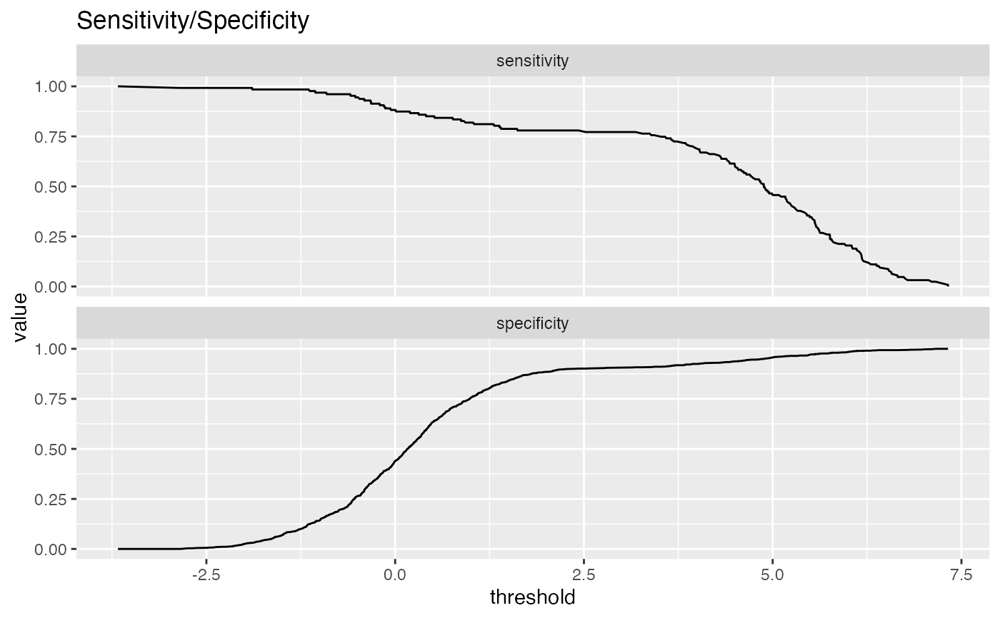

Plot classifier metrics as a function of thresholds.
ThresholdPlot(
frame,
xvar,
truthVar,
title,
...,
metrics = c("sensitivity", "specificity"),
truth_target = TRUE,
points_to_plot = NULL,
monochrome = TRUE,
palette = "Dark2",
linecolor = "black"
)data frame to get values from
column of scores
column of true outcomes
title to place on plot
no unnamed argument, added to force named binding of later arguments.
metrics to be computed. See Details for the list of allowed metrics
truth value considered to be positive.
how many data points to use for plotting. Defaults to NULL (all data)
logical: if TRUE, all subgraphs plotted in same color
character: if monochrome==FALSE, name of brewer color palette (can be NULL)
character: if monochrome==TRUE, name of line color
By default, ThresholdPlot plots sensitivity and specificity of a
a classifier as a function of the decision threshold.
Plotting sensitivity-specificity (or other metrics) as a function of classifier score helps
identify a score threshold that achieves an acceptable tradeoff among desirable
properties.
ThresholdPlot can plot a number of metrics. Some of the metrics are redundant,
in keeping with the customary terminology of various analysis communities.
sensitivity: fraction of true positives that were predicted to be true (also known as the true positive rate)
specificity: fraction of true negatives to all negatives (or 1 - false_positive_rate)
precision: fraction of predicted positives that are true positives
recall: same as sensitivity or true positive rate
accuracy: fraction of items correctly decided
false_positive_rate: fraction of negatives predicted to be true over all negatives
true_positive_rate: fraction of positives predicted to be true over all positives
false_negative_rate: fraction of positives predicted to be all false over all positives
true_negative_rate: fraction negatives predicted to be false over all negatives
For example, plotting sensitivity/false_positive_rate as functions of threshold will "unroll" an ROC Plot.
ThresholdPlot can also plot distribution diagnostics about the scores:
fraction: the fraction of datums that scored greater than a given threshold
cdf: CDF or 1 - fraction; the fraction of datums that scored less than a given threshold
Plots are in a single column, in the order specified by metrics.
points_to_plot specifies the approximate number of datums used to
create the plots as an absolute count; for example setting points_to_plot = 200 uses
approximately 200 points, rather than the entire data set. This can be useful when
visualizing very large data sets.
if (requireNamespace('data.table', quietly = TRUE)) {
# don't multi-thread during CRAN checks
data.table::setDTthreads(1)
}
# data with two different regimes of behavior
d <- rbind(
data.frame(
x = rnorm(1000),
y = sample(c(TRUE, FALSE), prob = c(0.02, 0.98), size = 1000, replace = TRUE)),
data.frame(
x = rnorm(200) + 5,
y = sample(c(TRUE, FALSE), size = 200, replace = TRUE))
)
# Sensitivity/Specificity examples
ThresholdPlot(d, 'x', 'y',
title = 'Sensitivity/Specificity',
metrics = c('sensitivity', 'specificity'),
truth_target = TRUE)

if(FALSE) {
MetricPairPlot(d, 'x', 'y',
x_metric = 'false_positive_rate',
y_metric = 'true_positive_rate',
truth_target = TRUE,
title = 'ROC equivalent')
ROCPlot(d, 'x', 'y',
truthTarget = TRUE,
title = 'ROC example')
# Precision/Recall examples
ThresholdPlot(d, 'x', 'y',
title = 'precision/recall',
metrics = c('recall', 'precision'),
truth_target = TRUE)
MetricPairPlot(d, 'x', 'y',
x_metric = 'recall',
y_metric = 'precision',
title = 'recall/precision',
truth_target = TRUE)
PRPlot(d, 'x', 'y',
truthTarget = TRUE,
title = 'p/r plot')
}